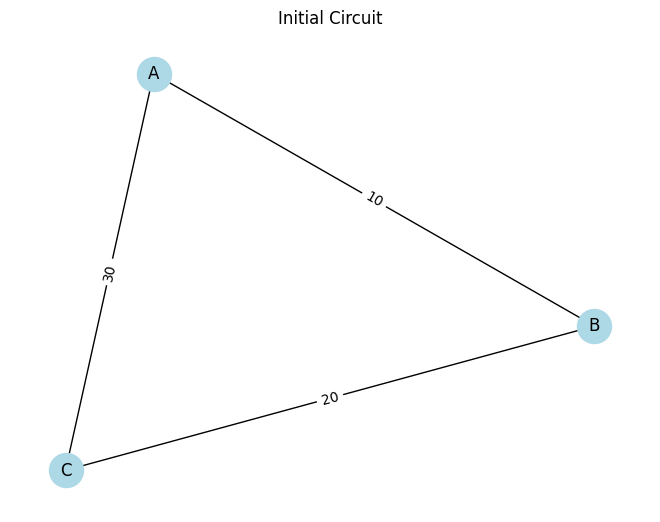

Equivalent Resistance Using Graph Theory
Introduction
Determining the equivalent resistance between two points in a circuit is essential for understanding current flow and power distribution. While traditional series-parallel simplifications work for small circuits, complex or nested resistor networks are better handled using graph theory.
By modeling the circuit as a graph:
-
Nodes represent electrical junctions.
-
Edges represent resistors with weights equal to their resistance.
Problem Setup
Graph Representation of a Circuit
-
Each junction in the circuit becomes a node.
-
Each resistor becomes a weighted edge.
-
The goal is to reduce the graph until only one edge remains between the source and target nodes.
Pseudocode and Algorithm Description
Series Reduction Rule
If a node has exactly two neighbors (degree 2) and is not the source/target:
-
Replace it with a direct connection between its neighbors.
-
Combine resistances by addition.
Parallel Reduction Rule
If there are multiple edges between the same two nodes:
- Combine resistances using the formula: \(\(R_{eq} = \left( \sum_{i} \frac{1}{R_i} \right)^{-1}\)\)
Pseudocode
FUNCTION simplify_circuit(graph):
WHILE graph is not fully reduced:
FOR each node:
IF degree == 2 and not terminal:
replace with series resistor
FOR node pairs with multiple edges:
replace with single parallel resistor
RETURN resistance between source and target
Python Implementation
Imports and Utilities
import networkx as nx
import matplotlib.pyplot as plt
def combine_series(R1, R2):
return R1 + R2
def combine_parallel(R1, R2):
return 1 / (1 / R1 + 1 / R2)
Visualization Function
def draw_graph(G, title):
pos = nx.spring_layout(G, seed=42)
edge_labels = nx.get_edge_attributes(G, 'resistance')
nx.draw(G, pos, with_labels=True, node_color='lightblue', node_size=600)
nx.draw_networkx_edge_labels(G, pos, edge_labels=edge_labels)
plt.title(title)
plt.show()
Simplification Algorithm
def simplify_circuit(G, source, target):
step = 1
draw_graph(G, f"Step {step}: Initial Circuit")
step += 1
changed = True
while changed:
changed = False
for node in list(G.nodes):
if node not in [source, target] and G.degree(node) == 2:
neighbors = list(G.neighbors(node))
if len(neighbors) == 2 and not G.has_edge(neighbors[0], neighbors[1]):
r1 = G[neighbors[0]][node]['resistance']
r2 = G[neighbors[1]][node]['resistance']
combined = combine_series(r1, r2)
G.add_edge(neighbors[0], neighbors[1], resistance=combined)
G.remove_node(node)
changed = True
draw_graph(G, f"Step {step}: After series simplification at {node}")
step += 1
break
edge_counts = {}
for u, v in list(G.edges):
key = tuple(sorted([u, v]))
edge_counts.setdefault(key, []).append(G[u][v]['resistance'])
for (u, v), resistances in edge_counts.items():
if len(resistances) > 1:
req = resistances[0]
for r in resistances[1:]:
req = combine_parallel(req, r)
G.remove_edges_from([(u, v)] * len(resistances))
G.add_edge(u, v, resistance=req)
changed = True
draw_graph(G, f"Step {step}: After parallel simplification between {u}-{v}")
step += 1
break
return G
Test Circuit Example
G = nx.Graph()
G.add_edge('A', 'B', resistance=10)
G.add_edge('B', 'C', resistance=20)
G.add_edge('A', 'C', resistance=30)
simplified = simplify_circuit(G, 'A', 'C')
print("Final Equivalent Resistance between A and C:", simplified['A']['C']['resistance'])

Analysis and Use Cases
-
Works well for resistive-only circuits.
-
Scales better than manual methods for medium-complexity problems.
-
Can be adapted for educational circuit solvers, PCB validation tools, and simulation engines.